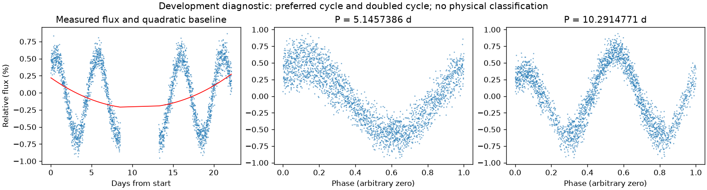
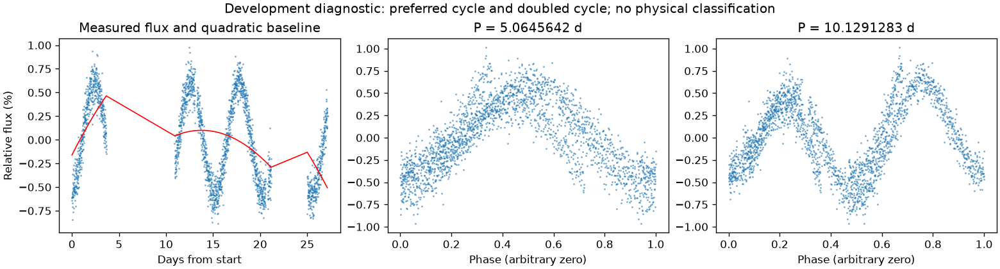

不同观测时段的周期仍有分歧
第二版周期：5.1457385634079245 天；状态：preferred_lightcurve_cycle。

左图红线是缓慢基线；右面两图去除该基线。若未通过周期要求，两图只展示得分最高的竞争解释。
| 竞争周期（天） | 交替周期预测改善 | 两组各自改善 | 通过初筛 |
|---|---|---|---|
| 5.1457386 | 64.9% | 54.6% / 71.9% | 是 |
| 1.3924272 | -7.2% | -8.8% / -6.1% | 否 |
| 1.9945590 | -52.2% | -58.9% / -47.2% | 否 |
| 3.8475942 | -79.4% | -36.4% / -147.4% | 否 |
| 7.7137607 | -133.4% | -113.6% / -261.6% | 否 |
| 2.8265089 | -148.1% | -158.9% / -135.8% | 否 |
| 2.7317896 | -201.6% | -209.3% / -193.7% | 否 |
| 2.6683197 | -232.9% | -259.4% / -208.5% | 否 |
“预测改善”衡量用一组周期的形状预测另一组，比只有缓慢基线好多少；负数表示更差。搜索和预测共用了资料，因此这不是可信概率，也不是独立验证。
第二版周期：5.064564158197658 天；状态：preferred_lightcurve_cycle。

左图红线是缓慢基线；右面两图去除该基线。若未通过周期要求，两图只展示得分最高的竞争解释。
| 竞争周期（天） | 交替周期预测改善 | 两组各自改善 | 通过初筛 |
|---|---|---|---|
| 5.1095849 | 51.9% | 46.8% / 56.9% | 是 |
| 5.0645642 | 50.5% | 40.8% / 59.2% | 是 |
| 2.0847141 | -32.0% | -31.6% / -32.5% | 否 |
| 1.3611341 | -33.3% | -46.4% / -23.2% | 否 |
| 1.8193509 | -34.5% | -34.8% / -34.2% | 否 |
| 8.0000000 | -74.2% | -121.2% / -36.2% | 否 |
| 3.6529297 | -81.4% | -47.5% / -132.9% | 否 |
| 2.7544504 | -118.4% | -127.7% / -110.0% | 否 |
“预测改善”衡量用一组周期的形状预测另一组，比只有缓慢基线好多少；负数表示更差。搜索和预测共用了资料，因此这不是可信概率，也不是独立验证。